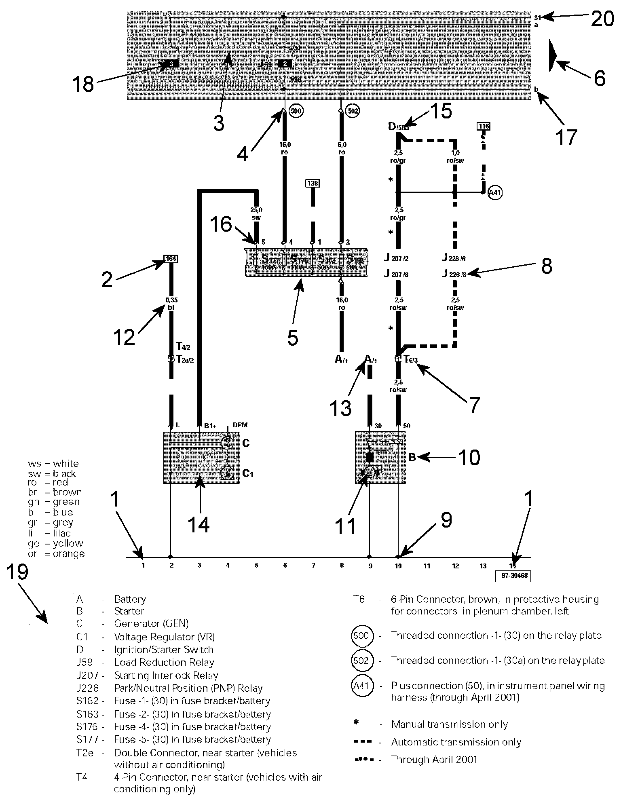

How to Read Track Diagrams
Wiring Diagram Layout:

1 - Track Numbers
Imaginary grid lines extending from the numbers on the bottom of the diagram toward the top of the diagram. These imaginary grid lines are used for identifying wire/circuit locations on diagrams.
2 - Reference of wire/circuit continuation to another diagram
Number in frame indicates track where the wire/circuit is continued. For example, the reference in this diagram is to track 164, which is on another diagram. In the other diagram showing track 164, the number in the frame for the same wire/circuit will change to the number 2, as that is the track number for where the wire/circuit came from on this diagram.
3 - Relay Panel - Indicated by grey area.
4 - Diagram of threaded pin on relay panel
White circle shows a detachable connection.
5 - Fuse designation
Use legend at bottom of page to identify the fuse code.
6 - Arrow
Indicates wiring circuit is continued on the previous and/or next diagram.
7 - Wire connection designation in wiring harness
Location of wire connections are indicated in the legend.
8 - Terminal designation
Designation which appears on actual component and/or terminal number of a multi-point connector. For example: J226/8 = PNP Relay/terminal #8.
9 - Ground connection
10 - Component designation
Use legend at bottom of page to identify the component.
11 - Component symbols
12 - Wire cross-section size (in mm sq.) and wire colors
13 - Component symbol with open drawing side
Indicated component is continued on another wiring diagram.
14 - Internal connections (thin lines)
These connections are not wires. Internal connections are current carrying and are listed to allow tracing of current flow inside components and wiring harness.
15 - Reference of continuation of wire to component
For example: D/50b = Ignition/Starter Switch/terminal 50b.
16 - Relay panel connectors
Shows wiring of multi-point or single connectors on relay panel.
17 - Reference of internal connection continuation
Letters indicate where connection continues on the previous and/or next diagram.
18 - Relay location number
Indicates the physical location of the relay (by position number) on the relay panel. (For an actual relay panel image/view, see the component location for the relay in question.)
19 - Legend
The legend contains the explanations for all of the designation codes used within the diagram. In all wiring diagrams the same component designation (code) is used for a particular component. For example, always "A" for the battery.
20 - Power/Ground Distribution Circuit Identification Following are the most common numbered/lettered circuits:
Terminal (circuit) 1
Ignition distributor low voltage (typically used as an Engine Speed (RPM) signal for the tachometer)
Terminal (circuit) 15
Switch Battery Positive Voltage (B+) from ignition/starter switch
Terminal (circuit) 30
Battery Positive voltage (B+), hot at all times
Terminal (circuit) 31
Ground (GND)
Terminal (circuit) 50
Starter control; switched B+ from ignition/starter switch
Terminal (circuit) 56
Switched headlight B+ from light switch
Terminal (circuit) 58
Switched parking light, taillight. illumination B+ from light switch
Terminal (circuit) S (SU)
Key in ignition circuit; switched B+ from ignition/starter switch
Terminal (circuit) X
Load reduction circuit; switched B+ from load reduction relay